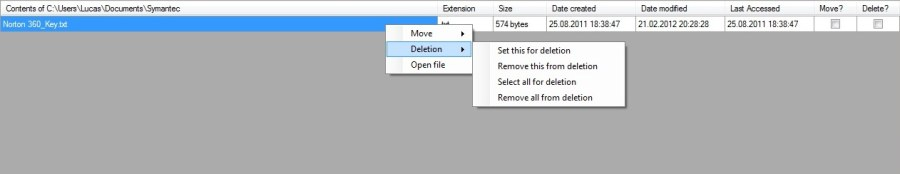
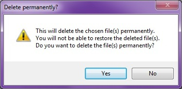

To delete files just check the file(s) in the datagridview, or rightclick -> Deletion
You can set several files in several folders for deletion. No files are deleted until you press the button.
To delete files just check the file(s) in the datagridview, or rightclick -> Deletion
You can set several files in several folders for deletion. No files are deleted until you press the button.
When it comes to deleting files, as with folders, you have two different options,
move the file(s) to the Recycle Bin or delete the file(s) permanently.
The difference between moving the file(s) to the Recycle Bin and deleting the file(s) permanently
is that with the Recycle Bin you can choose to restore the deleted file(s).
Deleting the file(s) permanently means just that - the file(s) are gone forever and not restorable.

Warning message when deleting permanently
Warning message when deleting permanently
You should also know that you can only move OR delete a file, meaning that a file can't be selected for both moving or deleting,
but you can select several files for both moving and deletion at the same time, but no action will be taken until corresponding
button is pressed.
<Current version 1.0.0.0>